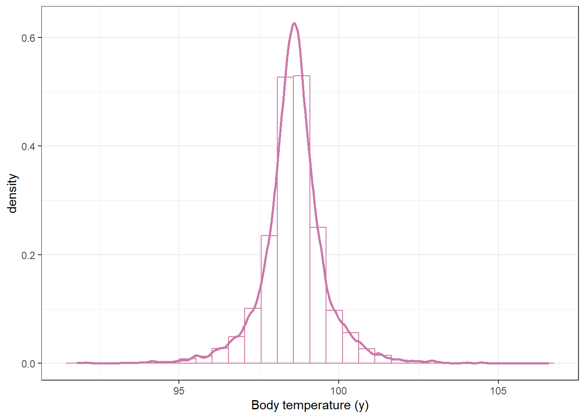
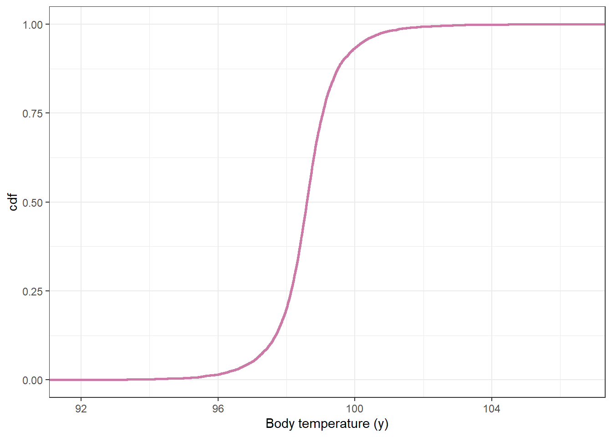
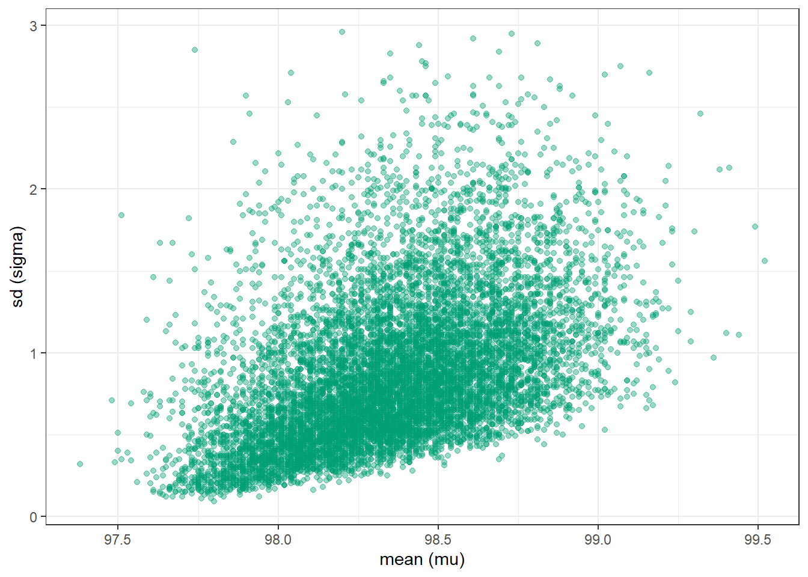
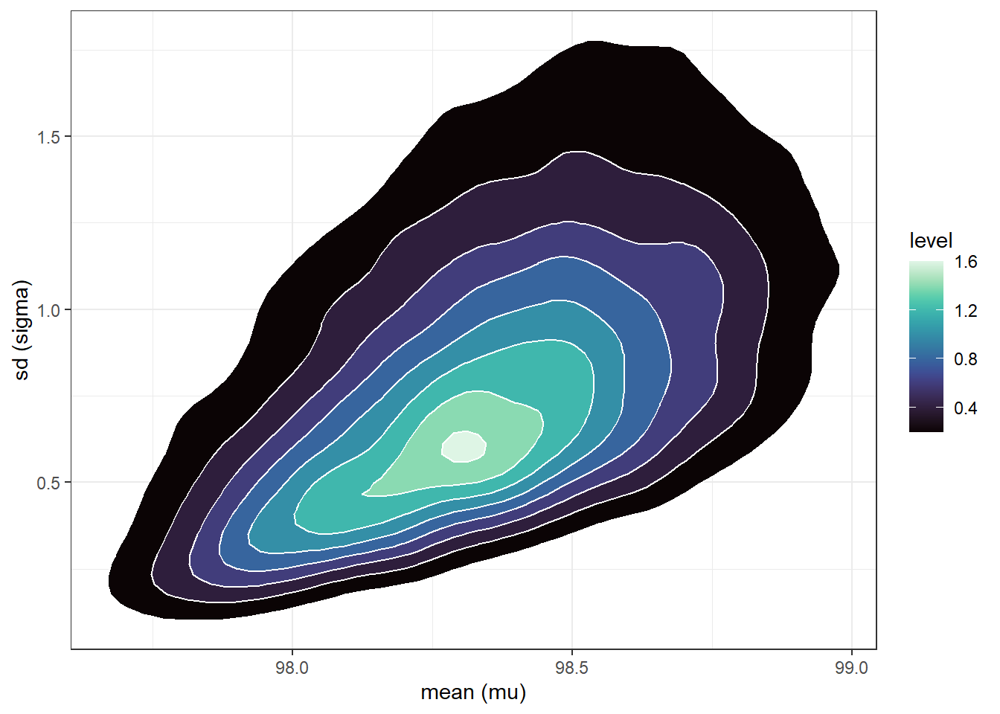
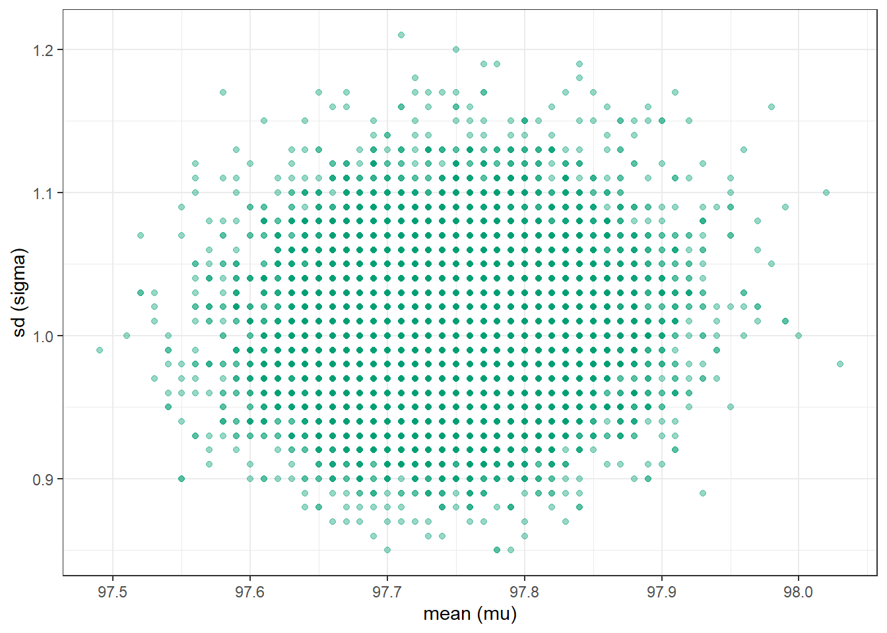
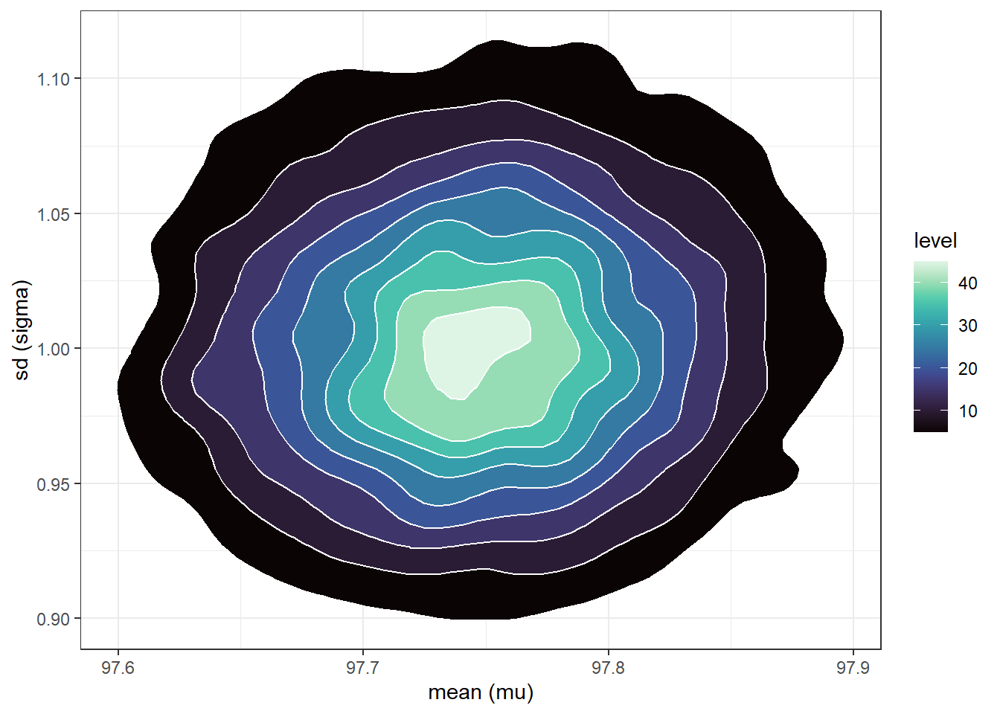
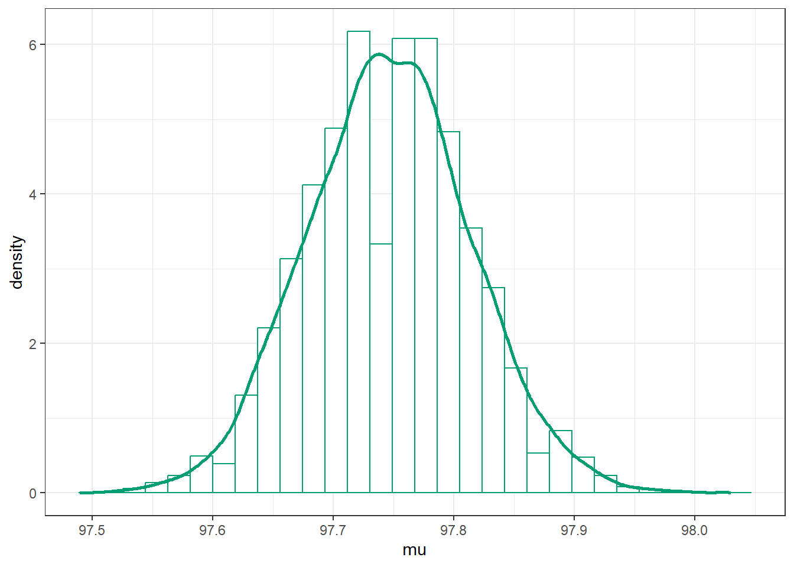
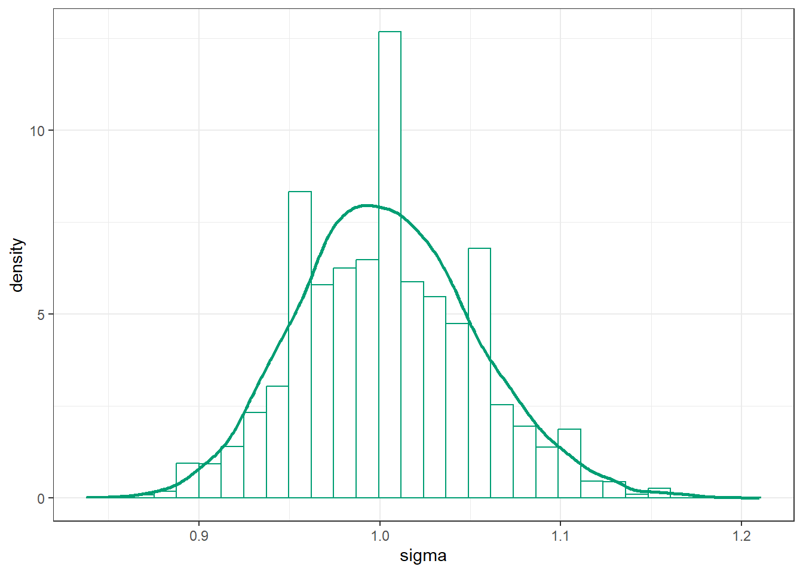
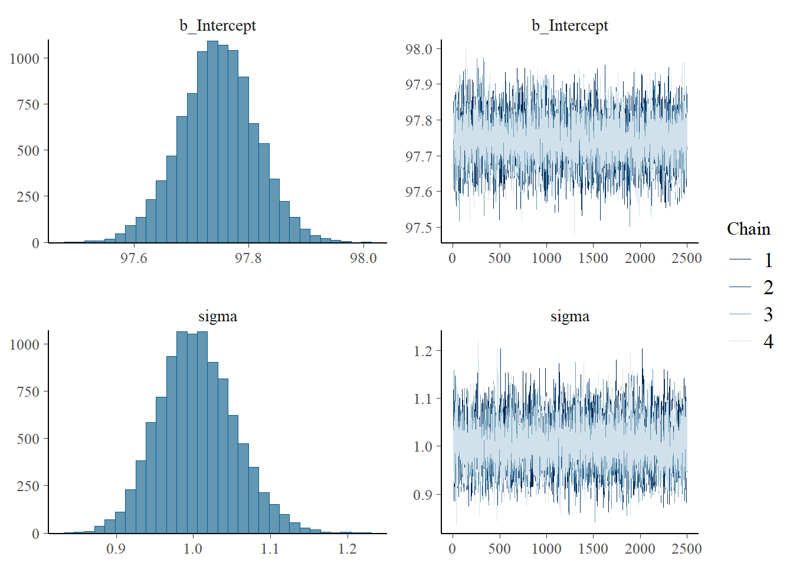
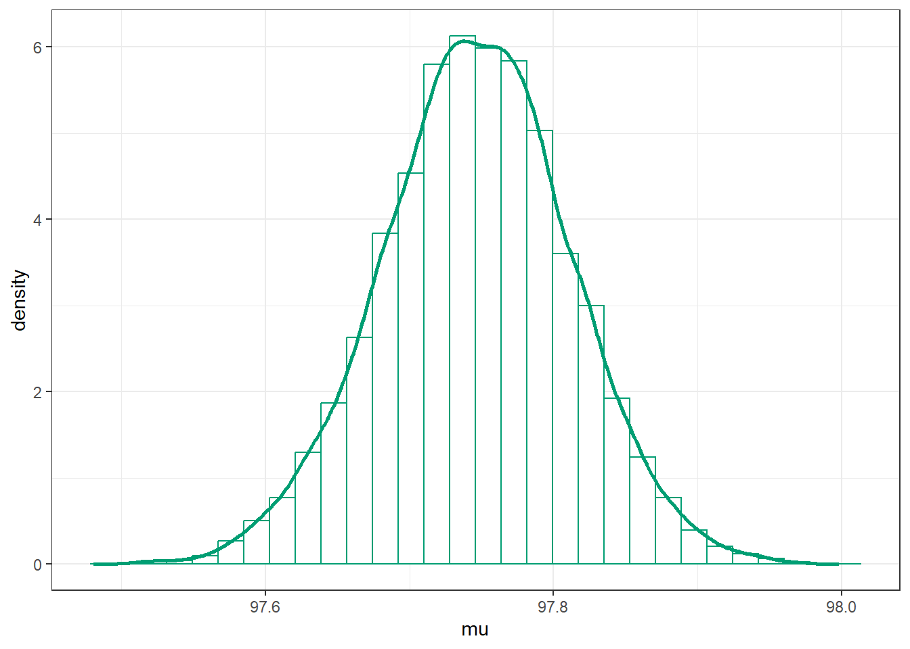

Most interesting problems involve multiple unknown parameters.
When there are two (or more) unknown parameters the prior and posterior distribution will each be a joint probability distribution over pairs (or tuples/vectors) of possible values of the parameters.
Example 17.1 Assume body temperatures (degrees Fahrenheit) of healthy adults follow a Normal distribution with unknown mean \(\mu\) and unknown standard deviation \(\sigma\). Suppose we wish to estimate both \(\mu\), the population mean healthy human body temperature, and \(\sigma\), the population standard deviation of body temperatures. Assume a discrete prior distribution according to which
\(\mu\) takes values 97.6, 98.1, 98.6 with prior probability 0.2, 0.3, 0.5, respectively.
\(\sigma\) takes values 0.5, 1 with prior probability 0.25, 0.75, respectively.
\(\mu\) and \(\sigma\) are independent.
Start to construct the Bayes table. What are the possible values of the parameter (in this discrete example)? What are the prior probabilities? (Hint: the parameter \(\theta\) is a pair\((\mu, \sigma)\).)
Suppose two temperatures of 97.5 and 97.9 are observed, independently. Identify the likelihood.
Complete the Bayes table and find the posterior distribution after observing these two measurements. Compare to the prior distribution.
The prior assumes that \(\mu\) and \(\sigma\) are independent. Are they independent according to the posterior distribution?
Example 17.2 Continuing Example 17.1, let’s assume a more reasonable, continuous prior for \((\mu,\sigma)\).
What are the possible values of \(\sigma\)? How would you choose a prior for \(\sigma\)?
For a prior, assume that: \(\mu\) has a Normal distribution with mean 98.6 and standard deviation 0.3, \(\sigma\) has a “Half-Normal(0, 1)” distribution (that’s Normal(0, 1) but constrained to positive values), and \(\mu\) and \(\sigma\) are independent. Simulate \((\mu, \sigma)\) pairs from the prior distribution and plot them.
Simulate the prior predictive distribution. Do the values seem reasonable? If not, adjust the prior distribution of parameters and try again.
Find and interpret a central 98% prior credible interval for \(\mu\).
Find and interpret a central 98% prior credible interval for \(\sigma\).
What is the prior credibility that both \(\mu\) and \(\sigma\) lie within their credible intervals?
Example 17.3 Continuing Example 17.1, we’ll now use grid approximation to approximate the posterior distribution.
Assume a grid of \(\mu\) values from 96 to 100 in increments of 0.01, and a grid of \(\sigma\) values from 0.01 to 3 in increments of 0.01. How many possible values of the pair \((\mu, \sigma)\) are there; that is, how many rows are there in the Bayes table?
Suppose first that we are given a sample of two measurements of 97.9 and 97.5. Use grid approximation to approximate the joint posterior distribution of \((\mu, \sigma)\) Simulate values from the joint posterior distribution and plot them. Compare to the prior. Compute the posterior correlation between \(\mu\) and \(\sigma\); are they independent according to the posterior distribution?
In a recent study, the sample mean body temperature in a sample of 208 healthy adults was 97.7 degrees F and the sample standard deviation was 1.0 degree F; the sample data is summarized in Section 17.1.5 (it’s the same data we used in Section 14.1). Use grid approximation to approximate the joint posterior distribution of \((\mu, \sigma)\) Simulate values from the joint posterior distribution and plot them. Compare to the prior. Compute the posterior correlation between \(\mu\) and \(\sigma\); are they independent according to the posterior distribution?
Example 17.4 Continuing Example 17.1, we’ll now use simulation to approximate the posterior distribution, given the same sample data as before.
Describe how, in principle, you would use a naive (non-MCMC) simulation to approximate the posterior distribution. In practice, what is the problem with such a simulation?
Use brms to approximate the posterior distribution. Compare to the results of the grid approximation.
Find and interpret a central 98% posterior credible interval for \(\mu\).
Find and interpret a central 98% posterior credible interval for \(\sigma\).
What is the posterior credibility that both \(\mu\) and \(\sigma\) lie within their credible intervals?
Example 17.5 Continuing the previous example
Describe how you could use simulation to approximate the posterior predictive distribution.
Run the simulation, summarize the predictive distribution, and find and interpret a 95% posterior predictive interval.
Explain how you could use posterior predictive checking to assess the reasonableness of the model in light of the observed data. Does the model seem reasonable?
Figure 17.2: Simulated joint prior distribution of mean and SD of body temperatures in Example 17.2.
17.1.3 Prior predictive distribution
# given theta = (mu, sigma), simulation y from Normal(mu, sigma)y_sim_prior =rnorm(n_rep, mu_sim_prior, sigma_sim_prior)# plot the simulated y valuesggplot(data.frame(y_sim_prior),aes(x = y_sim_prior)) +geom_histogram(aes(y =after_stat(density)),col = bayes_col["prior_predict"],fill ="white") +geom_density(col = bayes_col["prior_predict"],linewidth =1) +labs(x ="Body temperature (y)") +theme_bw()
`stat_bin()` using `bins = 30`. Pick better value with `binwidth`.

# plot the cdfggplot(data.frame(y_sim_prior),aes(x = y_sim_prior)) +stat_ecdf(col = bayes_col["prior_predict"],linewidth =1) +labs(x ="Body temperature (y)",y ="cdf") +theme_bw()

quantile(y_sim_prior, c(0.025, 0.975))
2.5% 97.5%
96.35845 100.74519
17.1.4 Grid approximation: \(n=2\)
mu =seq(96, 100, 0.01)sigma =seq(0.01, 3, 0.01)# theta is all possible (mu, sigma) pairstheta =expand.grid(mu, sigma)names(theta) =c("mu", "sigma")# priorprior_mu =dnorm(mu, 98.6, 0.3)prior_sigma =dnorm(sigma, 0, 1)prior =apply(expand.grid(prior_mu, prior_sigma), 1, prod)prior = prior /sum(prior)# datay =c(97.9, 97.5) # single observed value# likelihoodlikelihood =dnorm(97.9, mean = theta$mu, sd = theta$sigma) *dnorm(97.5, mean = theta$mu, sd = theta$sigma)# posteriorproduct = likelihood * priorposterior = product /sum(product)
n_rep =10000# sample (mu, sigma) pairs for the posterior distribution by# sampling rows of the Bayes table according to posterior# and then finding the (mu, sigma) values for the sampled rowsindex_sim =sample(1:length(posterior),size = n_rep, replace =TRUE,prob = posterior)sim_posterior = theta |>slice(index_sim)ggplot(sim_posterior,aes(x = mu,y = sigma)) +geom_point(color = bayes_col["posterior"], alpha =0.4) +labs(x ="mean (mu)",y ="sd (sigma)") +theme_bw()ggplot(sim_posterior,aes(x = mu,y = sigma)) +stat_density_2d(aes(fill =after_stat(level)),geom ="polygon", color ="white") +scale_fill_viridis(option ="mako") +labs(x ="mean (mu)",y ="sd (sigma)") +theme_bw()

(a) Scatterplot.

(b) Density plot.
Figure 17.3: Grid-approximated joint posterior distribution of mean and SD of body temperatures in Example 17.2.
cor(sim_posterior$mu, sim_posterior$sigma)
[1] 0.4622347
17.1.5 Sample data
data =read_csv("bodytemps.csv")
Rows: 208 Columns: 1
── Column specification ────────────────────────────────────────────────────────
Delimiter: ","
dbl (1): bodytemp
ℹ Use `spec()` to retrieve the full column specification for this data.
ℹ Specify the column types or set `show_col_types = FALSE` to quiet this message.
data |>ggplot(aes(x = bodytemp)) +geom_histogram(aes(y =after_stat(density)),col ="black", fill ="white") +geom_density(linewidth =1) +theme_bw()
`stat_bin()` using `bins = 30`. Pick better value with `binwidth`.
17.1.6 Grid approximation of posterior given sample data
mu =seq(96, 100, 0.01)sigma =seq(0.01, 3, 0.01)# theta is all possible (mu, sigma) pairstheta =expand.grid(mu, sigma)names(theta) =c("mu", "sigma")# priorprior_mu =dnorm(mu, 98.6, 0.3)prior_sigma =dnorm(sigma, 0, 1)prior =apply(expand.grid(prior_mu, prior_sigma), 1, prod)prior = prior /sum(prior)# datay = data$bodytemp# likelihood - looping through each theta, but probably better/easier wayslikelihood =rep(NA, nrow(theta))for (i in1:nrow(theta)) { likelihood[i] =prod(dnorm(y, theta[i, "mu"], theta[i, "sigma"]))}# posteriorproduct = likelihood * priorposterior = product /sum(product)
n_rep =10000# sample (mu, sigma) pairs for the posterior distribution by# sampling rows of the Bayes table according to posterior# and then finding the (mu, sigma) values for the sampled rowsindex_sim =sample(1:length(posterior),size = n_rep, replace =TRUE,prob = posterior)sim_posterior = theta |>slice(index_sim)ggplot(sim_posterior,aes(x = mu,y = sigma)) +geom_point(color = bayes_col["posterior"], alpha =0.4) +labs(x ="mean (mu)",y ="sd (sigma)") +theme_bw()ggplot(sim_posterior,aes(x = mu,y = sigma)) +stat_density_2d(aes(fill =after_stat(level)),geom ="polygon", color ="white") +scale_fill_viridis(option ="mako") +labs(x ="mean (mu)",y ="sd (sigma)") +theme_bw()

(a) Scatterplot.

(b) Density plot.
Figure 17.4: Grid-approximated joint posterior distribution of mean and SD of body temperatures in Example 17.2.
cor(sim_posterior$mu, sim_posterior$sigma)
[1] 0.0691847
mean(sim_posterior$mu)
[1] 97.74661
sd(sim_posterior$mu)
[1] 0.06813899
mean(sim_posterior$sigma)
[1] 1.004185
sd(sim_posterior$sigma)
[1] 0.0495512
sim_posterior |>ggplot(aes(x = mu)) +geom_histogram(aes(y =after_stat(density)),col = bayes_col["posterior"], fill ="white") +geom_density(linewidth =1, col = bayes_col["posterior"]) +theme_bw()
`stat_bin()` using `bins = 30`. Pick better value with `binwidth`.
sim_posterior |>ggplot(aes(x = sigma)) +geom_histogram(aes(y =after_stat(density)),col = bayes_col["posterior"], fill ="white") +geom_density(linewidth =1, col = bayes_col["posterior"]) +theme_bw()
`stat_bin()` using `bins = 30`. Pick better value with `binwidth`.

(a) Population mean (mu).

(b) Population SD (sigma).
Figure 17.5: Grid-approximated marginal distribution of mean and SD of body temperatures in Example 17.2.
17.1.7 Posterior simulation with brms
library(brms)library(bayesplot)library(tidybayes)
Next we fit the model to the data using the function brm. The three inputs are:
Input 1: the data data = data
Input 2: model for the data (likelihood) family = gaussian bodytemp ~ 1 # linear model with intercept only
Input 3: prior distribution for parameters prior(normal(98.6, 0.3), class = Intercept),prior(normal(0, 1), class = sigma))
Other arguments specify the details of the numerical algorithm; our specifications below will result in 10000 \(\theta\) values simulated from the posterior distribution. (It will simulate 3500 values (iter), discard the first 1000 (warmup), and then repeat 4 times (chains).)
fit <-brm(data = data,family = gaussian, bodytemp ~1,prior =c(prior(normal(98.6, 0.3), class = Intercept),prior(normal(0, 1), class = sigma)),iter =3500,warmup =1000,chains =4,refresh =0)
Compiling Stan program...
Start sampling
summary(fit)
Family: gaussian
Links: mu = identity; sigma = identity
Formula: bodytemp ~ 1
Data: data (Number of observations: 208)
Draws: 4 chains, each with iter = 3500; warmup = 1000; thin = 1;
total post-warmup draws = 10000
Regression Coefficients:
Estimate Est.Error l-95% CI u-95% CI Rhat Bulk_ESS Tail_ESS
Intercept 97.75 0.07 97.61 97.87 1.00 8101 6717
Further Distributional Parameters:
Estimate Est.Error l-95% CI u-95% CI Rhat Bulk_ESS Tail_ESS
sigma 1.00 0.05 0.91 1.11 1.00 8166 6352
Draws were sampled using sampling(NUTS). For each parameter, Bulk_ESS
and Tail_ESS are effective sample size measures, and Rhat is the potential
scale reduction factor on split chains (at convergence, Rhat = 1).
plot(fit)

posterior = fit |>spread_draws(b_Intercept, sigma) |>rename(mu = b_Intercept)
posterior |>head(10) |>kbl() |>kable_styling()
.chain
.iteration
.draw
mu
sigma
1
1
1
97.81859
1.1173924
1
2
2
97.78917
1.0936603
1
3
3
97.70184
0.9921338
1
4
4
97.76928
1.0270858
1
5
5
97.70994
1.0905127
1
6
6
97.78400
0.9790875
1
7
7
97.72138
0.9984059
1
8
8
97.69896
0.9934875
1
9
9
97.75091
1.0016151
1
10
10
97.73454
1.0291681
Marginal posterior distribution of \(\mu\)
posterior |>ggplot(aes(x = mu)) +geom_histogram(aes(y =after_stat(density)),col = bayes_col["posterior"], fill ="white") +geom_density(linewidth =1, col = bayes_col["posterior"]) +theme_bw()

# posterior mean of mumean(posterior$mu)
[1] 97.74613
# posterior sd of musd(posterior$mu)
[1] 0.06570448
# posterior quantiles are endpoints of credible intervals for muquantile(posterior$mu, c(0.01, 0.10, 0.25, 0.50, 0.75, 0.90, 0.99))